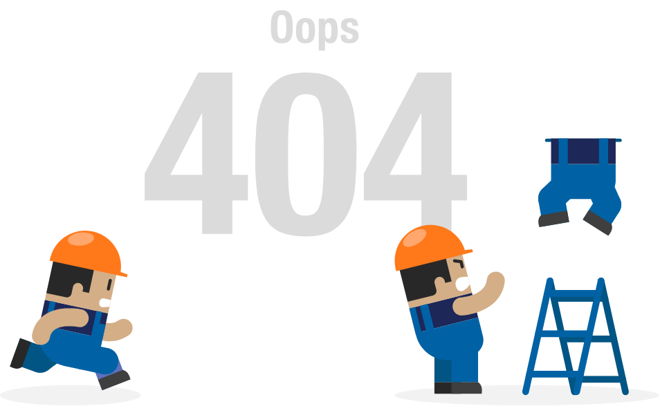

<!--09-Pagina de Erro de digitação da url-->
<h1>ERROR 404 - PÁGINA NÃO ENCONTRADA...</h1>


<!--12- será a criação da pagina de segurança, chamada auth, com os 
comando no terminal: ng g guard Auth, depois selecionar a opção: CanActivate-->